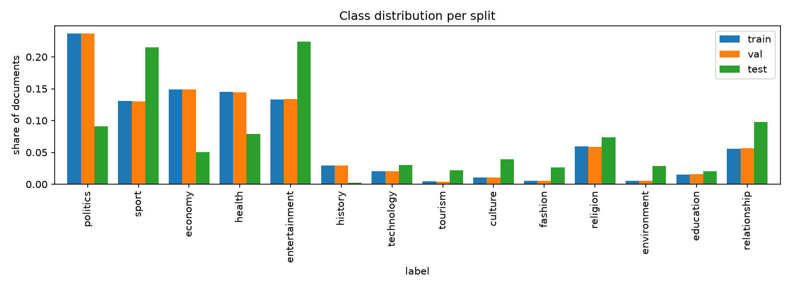
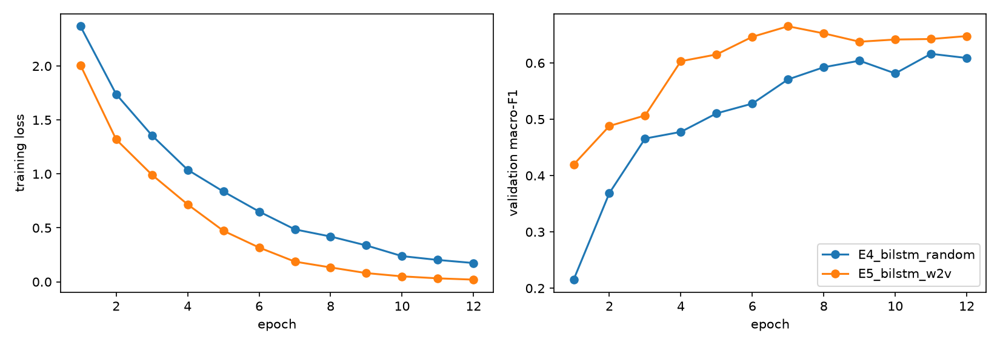
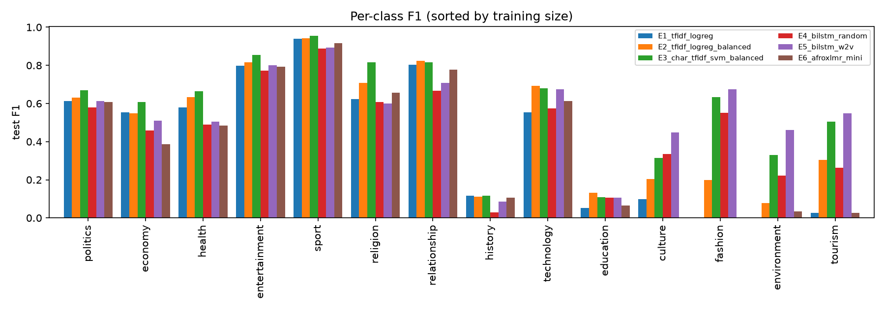

Kinyarwanda News Topic Classification: Baselines, Recurrent Models and African-Language Transformers on a Deduplicated KINNEWS
Shlom Amaliza · African Leadership University · a.mihigo1@alustudent.com
GitHub repository: https://github.com/amaliza-shal/Text-Classification-Summative Demo video: link added on submission Live system: https://kinnews-classifier-rw.streamlit.app/
1. Abstract
This project classifies Kinyarwanda news articles into 14 topics using the KINNEWS dataset. A check of the data showed that more than half of the training rows were duplicates and that half of the test set came from news websites never seen in training. After cleaning, 6,716 training, 747 validation and 3,456 test articles remained. We compared eight experiments, from TF-IDF baselines to a BiLSTM with Word2Vec and two small fine-tuned Transformers. A linear SVM on character n-grams worked best (76.1% accuracy, 0.577 macro-F1). The neural models did not beat it with this little data and compute. Most errors come from unseen websites and from websites using categories differently. We also show that the ~88% accuracy reported in earlier work depends on duplicates leaking into the evaluation.
2. Introduction
Kinyarwanda is a Bantu language and one of Rwanda's official languages. Like most African languages, it has very little labelled data for NLP (Joshi et al., 2020). Rwandan news sites publish Kinyarwanda articles every day, but most text tools are built for English or French.
The task is news topic classification: given an article's title and body, predict one of 14 topics (politics, sport, economy, health, entertainment, history, technology, tourism, culture, fashion, religion, environment, education, relationship). This can help newsrooms tag articles, archives index content, and researchers build Kinyarwanda resources. It is also hard: Kinyarwanda attaches many prefixes and suffixes to each stem, its spelling varies, and the data is small and unbalanced.
Objective. Build and deploy a Kinyarwanda topic classifier, and answer four questions: (1) How reliable is the benchmark data? (2) Do word or character features suit Kinyarwanda better? (3) Do neural models beat a strong linear baseline? (4) Does a Transformer adapted to African languages help?
3. Related Work
Niyongabo et al. (2020) released KINNEWS, the first Kinyarwanda news classification dataset, and reported about 88.5% accuracy with TF-IDF + SVM and with a BiGRU on Word2Vec embeddings. MasakhaNEWS (Adelani et al., 2023) covers news topics for 16 other African languages, and AfriSenti (Muhammad et al., 2023) includes Kinyarwanda sentiment data.
TF-IDF with a linear classifier is a standard strong baseline. Word2Vec (Mikolov et al., 2013) learns word vectors from context; LSTMs (Hochreiter & Schmidhuber, 1997) read text in order; and attention (Bahdanau et al., 2015; Yang et al., 2016) focuses on the most useful words. Pretrained Transformers such as BERT (Devlin et al., 2019) and XLM-R (Conneau et al., 2020) are now the usual choice, but they cover African languages poorly. AfriBERTa (Ogueji et al., 2021), AfroXLMR (Alabi et al., 2022) and KinyaBERT (Nzeyimana & Niyongabo Rubungo, 2022) address this. AfroXLMR-mini, built on the distilled mMiniLMv2 (Wang et al., 2021), is small enough for ordinary hardware.
Gap. Several community models fine-tuned on KINNEWS also exist on the Hugging Face Hub (e.g. henryparfait/kinnews-topic-classifier, Seziberagabriel/kinyarwanda-news-classifier), but they report a single score. Duplicated data is known to inflate scores (Lee et al., 2022). This project adds: an explanation of the gap to the published ~88%, an analysis of performance on unseen news websites, a matched test of the African-language Transformer, and an error analysis of where mistakes come from.
4. Dataset and Data Preparation
Source. KINNEWS (Niyongabo et al., 2020; MIT licence) contains real articles from 15 Rwandan news websites and 5 newspapers. The authors merged the publishers' 48 categories into 14, and two native-speaker annotators labelled each article. We used the raw version from the Hugging Face Hub (17,014 training and 4,254 test rows). No synthetic data was used.
Quality check. We checked the data before training (Table 1):
train
test
rows in the release
17,014
4,254
rows with < 10 words
0
4
rows whose article has two different labels
1,453
0
exact duplicate rows
8,098
791
test articles also in train
–
3
unique articles kept
7,463
3,456
Table 1. Effect of the cleaning steps.
More than half of the training rows are repeats; one article appears 80 times.
About 70 articles had broken characters (e.g. ’ for ’).
Training articles come from 18 websites, but the test set comes from three, and two of them (igihe.com and kigalipost.com, about half of the test set) never appear in training.
Preprocessing. Each input is title . body. For TF-IDF, Word2Vec and the BiLSTM we fix the encoding, lowercase, and remove URLs, numbers and punctuation. Apostrophes become spaces, so n'abana gives the word abana. For the Transformers we only fix the encoding, since their tokenizer expects normal text. We then remove short articles, conflicting labels, duplicates and test articles found in training, and take a stratified 10% of training data for validation: 6,716 / 747 / 3,456 articles. The test set is only used for final scores.
Characteristics. The classes are very unbalanced (Figure 1): politics has 1,590 training articles, tourism only 30. The median article has about 300 words. The vocabulary has 139,883 words, 55% of which appear only once, which reflects Kinyarwanda's rich word formation.

Figure 1. Share of each topic in the train, validation and test splits.
5. Methodology
Each experiment changes one thing from the previous one, and all use the same splits, evaluation code and seed (42).
ID
Model
Question
E0
Majority class
Lowest possible score
E1
Word 1-2-gram TF-IDF + logistic regression
Baseline
E2
E1 + class weights
Does reweighting help rare topics?
E3
Character 2-5-gram TF-IDF + linear SVM
Do sub-word features suit Kinyarwanda?
E4
BiLSTM + attention, random embeddings
Does reading word order help?
E5
BiLSTM + attention, Word2Vec embeddings
Do pretrained embeddings help?
E6
AfroXLMR-mini, fine-tuned (lr 5e-5)
Does an African-language Transformer help?
E7
mMiniLM (E6's starting model), lr 5e-5
Does the African-language training matter?
E8
E6 with lr 1.5e-4
Was E6 undertrained?
Table 2. Experiments.
Baselines (E1-E3). TF-IDF with logistic regression (C = 10) on words, then with class weights, then character 2-5-grams with a linear SVM (C = 0.5). Character n-grams let forms like abanyeshuri and abanyeshuli share features. E1 is the baseline because it is simple and matches the paper's classical models.
Word2Vec. Skip-gram, 100 dimensions, trained on the training split only. Its neighbours capture spelling variants (kiliziya "church" → gatolika, gaturika).
BiLSTM (E4, E5). First 400 words → 100-d embeddings → bidirectional LSTM (128 units each way) → attention-weighted sum → 14 outputs. Adam (lr 2e-3), batch 32, 12 epochs, dropout 0.4, class-weighted loss; the best validation epoch is kept.
Transformers (E6-E8). AfroXLMR-mini (Alabi et al., 2022) is mMiniLMv2 trained further on 17 African languages, including Kinyarwanda. E7 uses the original mMiniLMv2 with the same settings, to isolate that extra training. Fine-tuning used the Hugging Face Trainer (Wolf et al., 2020): 128 tokens, batch 16, 4 epochs, AdamW with warm-up, class-weighted loss. Training ran on a laptop CPU with 8 GB RAM, so we froze the embedding layer and kept inputs short.
Metrics. Accuracy, precision, recall and F1 per class and on average. Macro-F1 is the main metric because it counts every topic equally, while accuracy is dominated by the large ones.
5.1 Existing resources and our own work
Used as they are: the KINNEWS dataset; the pretrained AfroXLMR-mini and mMiniLMv2 weights; scikit-learn (Pedregosa et al., 2011), gensim (Řehůřek & Sojka, 2010), PyTorch (Paszke et al., 2019), Hugging Face Transformers and Streamlit. Our own work: the data audit and cleaning, the splits, all eight experiments and their training code, the evaluation and error analysis, the comparison with published results, and the web app.
6. Experiments and Results
ID
Model
Accuracy
Macro P
Macro R
Macro F1
Weighted F1
Val. macro F1
E0
Majority class
0.091
0.006
0.071
0.012
0.015
0.027
E1
Word TF-IDF + LogReg
0.691
0.567
0.460
0.411
0.657
0.579
E2
E1 + class weights
0.719
0.679
0.526
0.487
0.699
0.646
E3
Char TF-IDF + LinearSVC
0.761
0.654
0.610
0.577
0.753
0.736
E4
BiLSTM, random emb.
0.629
0.560
0.488
0.467
0.648
0.616
E5
BiLSTM, Word2Vec emb.
0.674
0.591
0.592
0.545
0.690
0.665
E6
AfroXLMR-mini, lr 5e-5
0.670
0.405
0.449
0.390
0.634
0.445
E7
mMiniLM, lr 5e-5
stopped after 2.6 epochs: did not learn (validation loss 2.65 ≈ ln 14)
0.027
E8
AfroXLMR-mini, lr 1.5e-4
stopped after 1 epoch: collapsed to one class
0.008
Table 3. Test results (3,456 articles) and best validation macro-F1.
Class weights (E1 → E2): macro-F1 0.41 → 0.49. Without them, fashion and environment were never predicted correctly.
Characters vs. words (E2 → E3): the biggest gain, macro-F1 0.49 → 0.58 and accuracy 0.72 → 0.76. With 55% of words appearing only once, character n-grams share information between word forms. E3 is the final model.
Word2Vec (E4 → E5): +8 macro-F1 points and faster learning (best epoch 7 instead of 11). Both BiLSTMs overfit quickly (Figure 2) and still don't beat E3: with little data, a more complex model isn't automatically better.
Transformers (E6-E8): E6 was still improving after 4 epochs (validation macro-F1 0.21 → 0.45) and reached 67.0% test accuracy but only 0.390 macro-F1, because it rarely predicted the small topics. mMiniLM (E7) didn't learn at all at the same settings, which suggests the African-language training helps, and a higher learning rate (E8) collapsed. E7 and E8 were stopped early for time. Reading only ~50 words with frozen embeddings, these models were undertrained.

Figure 2. BiLSTM training loss and validation macro-F1 per epoch.
Comparison with published results. The paper reports ~88.5%, our best is 76.1%. A word TF-IDF SVM like theirs gets 89.2% on a random split of the raw training data, where 57% of the held-out articles also appear in training. After removing duplicates it gets 77.8%, and on the official test set 70-73%. So the published numbers are likely inflated by duplicates, and our stricter results shouldn't be compared with them directly.
7. Error Analysis and Discussion

Figure 3. Test F1 per topic for each model (topics sorted by training size).
Rare topics are hardest. Sport (0.96 F1) and entertainment (0.85) are easy; history (0.12) and education (0.11) are hard. The BiLSTM beats the SVM on the four smallest topics (e.g. culture 0.45 vs 0.31), so embeddings help with few examples.
New websites are the biggest problem. The SVM gets 0.89 accuracy on the website it saw in training but 0.60-0.68 on the two new ones. Part of its strength is wording specific to familiar websites.
Websites define categories differently. 13 of the 41 education → relationship errors are dream or name-meaning articles that one test website calls "education". Most of the 27 health → politics errors are crime reports that one website files under "health". No model trained on the training labels could get these right.
Topics overlap. culture → history is the most common error (48 articles, e.g. stories about the Rwandan monarchy), and fashion → entertainment errors are mostly celebrity stories.
Long articles are harder (0.79 accuracy up to 300 words, 0.53 above 1,000), probably because they mix topics. Unknown words matter little (5.1% in wrong vs 4.5% in correct predictions).
Successes. Articles with clear topic words are handled well, e.g. football (Amavubi, APR FC), church news (Kiliziya, Paruwasi) and tourism (ingagi "gorillas", abakerarugendo "tourists").
This matches the literature: duplicates inflate scores (Lee et al., 2022), and sub-word information matters for languages like Kinyarwanda, which is why KinyaBERT is built around its morphology (Nzeyimana & Niyongabo Rubungo, 2022).
8. Deployment
The final model is deployed as a Streamlit web app (webapp/streamlit_app.py) on Streamlit Community Cloud (https://kinnews-classifier-rw.streamlit.app/). Hugging Face app hosting now requires a paid plan, so the trained models are stored in a free Hugging Face model repository (https://huggingface.co/amaliza-shal/kinnews-models) and downloaded by the app at start-up. The app has four pages:
Overview: the problem, why Kinyarwanda, the 14 topics and how the system works.
Classify: paste an article or pick one of eight real test articles, then choose the final model (E3) or the BiLSTM (E5). The text is cleaned with the same code as in training, and the app shows the topic in English and Kinyarwanda, the top 5 topics and both models' answers. For test examples it shows whether the answer is correct; the "tricky case" is a real error.
Results and The data: interactive charts of the experiments, per-topic F1 and the cleaning statistics.
The Transformer (E6) is not in the app: it was the weakest model and needs more memory than free hosting provides.
9. Limitations and Future Work
Data: only 6.7k training articles, six topics with fewer than 200, labels that follow each website's own categories, and one topic per article even when topics overlap.
Models: CPU-only training meant the Transformers read ~50 words with frozen embeddings; a GPU with longer inputs could change the ranking.
Evaluation: one run per setting without hyperparameter search; the SVM's scores in the app are not true probabilities.
Future work: KinyaBERT or longer-context models, more news sources, multi-label topics, and a proper learning-rate search for the Transformers.
10. Conclusion
We built and deployed a Kinyarwanda news topic classifier and compared eight experiments. The biggest lesson was about the data: half of the benchmark's training set was duplicates, which explains the high published scores. The best model was a simple character n-gram SVM (76.1% accuracy, 0.577 macro-F1), which handles Kinyarwanda's many word forms well; class weights and Word2Vec helped, but neural models did not win with this little data and compute. Most remaining errors come from new websites and inconsistent categories. In short: check the data first, test on data that looks like real use, and don't assume a bigger model is better.
11. References
Adelani, D. I., et al. (2023). MasakhaNEWS: News topic classification for African languages. In Proceedings of IJCNLP-AACL 2023.
Alabi, J. O., Adelani, D. I., Mosbach, M., & Klakow, D. (2022). Adapting pre-trained language models to African languages via multilingual adaptive fine-tuning. In Proceedings of COLING 2022 (pp. 4336-4349).
Bahdanau, D., Cho, K., & Bengio, Y. (2015). Neural machine translation by jointly learning to align and translate. In ICLR 2015.
Conneau, A., et al. (2020). Unsupervised cross-lingual representation learning at scale. In Proceedings of ACL 2020 (pp. 8440-8451).
Devlin, J., Chang, M.-W., Lee, K., & Toutanova, K. (2019). BERT: Pre-training of deep bidirectional Transformers for language understanding. In Proceedings of NAACL-HLT 2019 (pp. 4171-4186).
Hochreiter, S., & Schmidhuber, J. (1997). Long short-term memory. Neural Computation, 9(8), 1735-1780.
Joshi, P., Santy, S., Budhiraja, A., Bali, K., & Choudhury, M. (2020). The state and fate of linguistic diversity and inclusion in the NLP world. In Proceedings of ACL 2020 (pp. 6282-6293).
Lee, K., Ippolito, D., Nystrom, A., Zhang, C., Eck, D., Callison-Burch, C., & Carlini, N. (2022). Deduplicating training data makes language models better. In Proceedings of ACL 2022 (pp. 8424-8445).
Mikolov, T., Sutskever, I., Chen, K., Corrado, G., & Dean, J. (2013). Distributed representations of words and phrases and their compositionality. In NeurIPS 2013.
Muhammad, S. H., et al. (2023). AfriSenti: A Twitter sentiment analysis benchmark for African languages. In Proceedings of EMNLP 2023.
Niyongabo, R. A., Qu, H., Kreutzer, J., & Huang, L. (2020). KINNEWS and KIRNEWS: Benchmarking cross-lingual text classification for Kinyarwanda and Kirundi. In Proceedings of COLING 2020 (pp. 5507-5521).
Nzeyimana, A., & Niyongabo Rubungo, A. (2022). KinyaBERT: A morphology-aware Kinyarwanda language model. In Proceedings of ACL 2022 (pp. 5347-5363).
Ogueji, K., Zhu, Y., & Lin, J. (2021). Small data? No problem! Exploring the viability of pretrained multilingual language models for low-resourced languages. In Proceedings of the 1st Workshop on Multilingual Representation Learning (pp. 116-126).
Paszke, A., et al. (2019). PyTorch: An imperative style, high-performance deep learning library. In NeurIPS 2019 (pp. 8024-8035).
Pedregosa, F., et al. (2011). Scikit-learn: Machine learning in Python. Journal of Machine Learning Research, 12, 2825-2830.
Řehůřek, R., & Sojka, P. (2010). Software framework for topic modelling with large corpora. In Proceedings of the LREC 2010 Workshop on New Challenges for NLP Frameworks (pp. 45-50).
Wang, W., Bao, H., Huang, S., Dong, L., & Wei, F. (2021). MiniLMv2: Multi-head self-attention relation distillation for compressing pretrained Transformers. In Findings of ACL 2021 (pp. 2140-2151).
Wolf, T., et al. (2020). Transformers: State-of-the-art natural language processing. In Proceedings of EMNLP 2020: System Demonstrations (pp. 38-45).
Yang, Z., Yang, D., Dyer, C., He, X., Smola, A., & Hovy, E. (2016). Hierarchical attention networks for document classification. In Proceedings of NAACL-HLT 2016 (pp. 1480-1489).
Streamlit (2026). Streamlit documentation and Community Cloud. https://docs.streamlit.io
Hugging Face Hub model and dataset cards (accessed October 2026): Davlan/afro-xlmr-mini; nreimers/mMiniLMv2-L12-H384-distilled-from-XLMR-Large; andreniyongabo/kinnews_kirnews; henryparfait/kinnews-topic-classifier; Seziberagabriel/kinyarwanda-news-classifier. https://huggingface.co